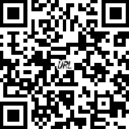

matatsunaのEP演習発表置き場
MATAMATA(Windows版ダウンロード)
MATAMATA(Android版ダウンロード)
MATAMATA(JavaScript版）←すべての環境で動きます
一部の端末で起動に時間がかかりますのでご注意ください。
↓スマホでアクセス場合

EP演習発表までのカウントダウン
何か質問などあれば @matatsuna まで！！
・special thanks
@FMS_Cat,@kkrnt,@kwzr,@ta_OwO_ka
@fmstiara ,@revC_Rain,@mkk_fms,@wadawadatnp,@7th_FMS
他にも、製作段階で多くの方々から意見をもらえてここまで作り上げることが出来ました。
本当にありがとうございました！
以下readme
【ソフト名】MATAMATA
【著作権者】matatsuna
【制作日】2015/06/01
【連絡先】@matatsuna
【開発環境】
Hot Soup Processor (HSP) ver.3.4
Copyright (C) 1997-2015, Onion Software/onitama, all rights reserved.
Made with base technology of OpenHSP.
http://hsp.tv/
―――――――――――――――――――――――――――――――――――――
≪著作権および免責事項≫
本ソフトはフリーソフトです。自由にご使用ください。なお，著作権は作者
であるmatatsunaが保有しています。
このソフトウェアを使用したことによって生じたすべての障害・損害・不具
合等に関しては、私と私の関係者および私の所属するいかなる団体・組織とも、
一切の責任を負いません。各自の責任においてご使用ください。
・はじめに
スマートフォンアプリのLINEツムツムにインスパイアを受けてめいじろう版を作成しました。
このプログラムは、JavaScriptへの移植も考えていたので、HSPのobaq(物理エンジン)を使用していません。
・遊び方
同じ色のめいじろを三つ以上つなげると消えます。
60秒間でのスコアで競います。
・履歴
ver1.0 2015/06/01
FMSのEP演習で公開
・効果音
以下のサイトの音源を使用しました。
魔王魂
http://maoudamashii.jokersounds.com/
onion software
http://www.onionsoft.net/music.html
On-Jin～音人～
http://on-jin.com/
・素材
明治大学ホームページ
http://www.meiji.ac.jp/koho/information/meijiro/
PicsArt
http://picsart.com/
Walt-Disney-Script
http://fonts.gifmania.jp/W-Fonts/Walt-Disney-Script.htm
GIMP 2
--以上--